Vehicle Control History, PCS Freeze Frame Data & camera images
Field steps, at the vehicle · Rev. Sept 2026
Screens after B. Muir / Crash Data Specialists and E. Clarke / CHP MAIT
Before you start
Confirm you have lawful authority. Some states require the owner's written consent.
Confirm the TIS subscription is active — Professional Diagnostics, not Standard.
Retrieve early. VCH records overwrite; every key cycle risks losing data.
Have a booster battery. A read can take 1–90 minutes.
Photograph the vehicle, VIN plate, odometer and DLC. Note laptop clock vs. actual time.
Screen-capture every screen as you go. They cannot be recreated later.
1Check for 12 volts at the battery. Turn the ignition ON — do not start the engine.
Connect the VIM to the DLC and to the laptop.
2Launch Techstream. Capture the main screen — software version, remaining subscription time
(lower left) and the active VIM in the status bar.
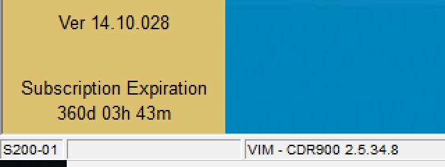
Step 2 — lower-left corner of the main screen.
3Click Setup → VIM Select. Choose your interface, click OK, and capture it.
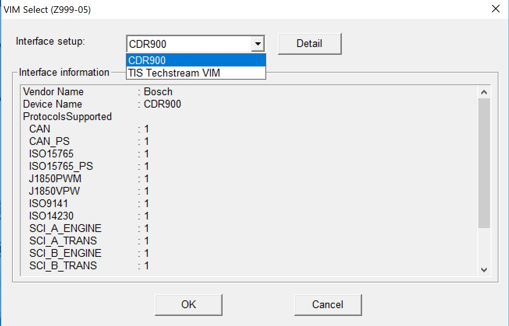
Step 3 — VIM Select.
4Click Connect to Vehicle (top of the left panel).
Confirm Division, Model, Year and Engine, set any options the vehicle
carries, add a case note in Memo, then Next. Capture this screen — it is your
record that the tool was on this VIN.
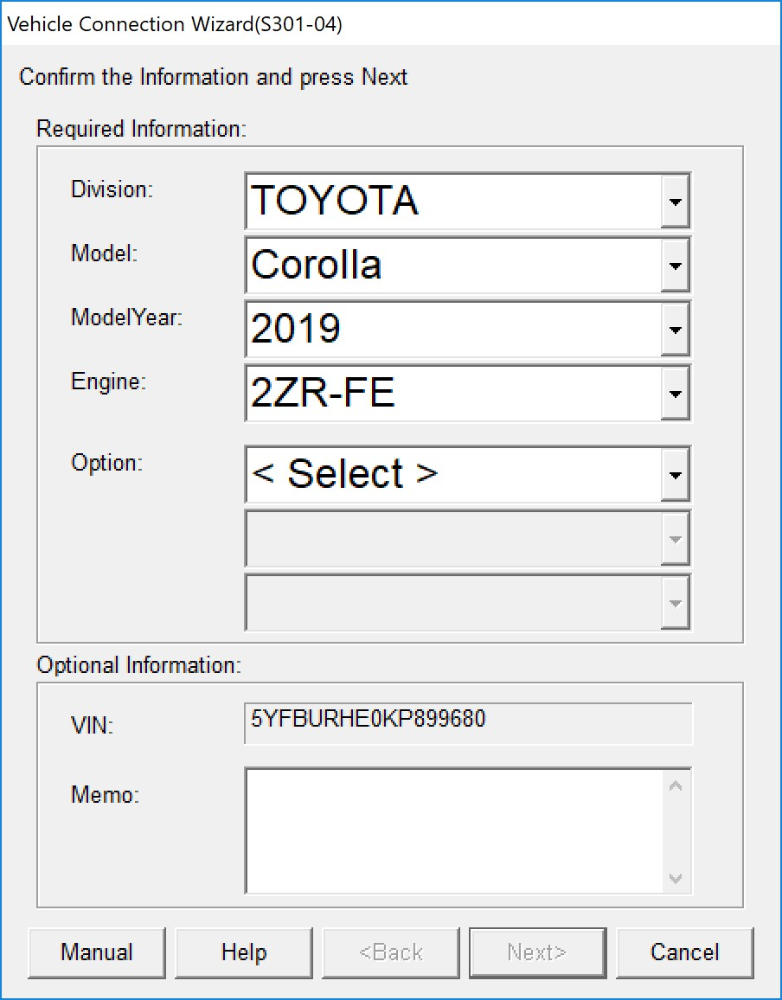
Step 4 — confirm vehicle information and VIN.
Connecting manually (D2M)? Type the VIN yourself. Techstream builds the
file name from the VIN — blank or wrong gives a mismatch error and a misnamed file.
5At the System Selection Menu, run Health Check to bus-scan the vehicle. Save or print the
report and capture the menu as your ECU inventory.
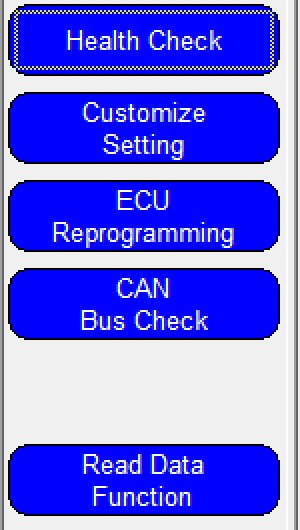
Step 5 — left panel. Health Check now; Read Data Function at step 7.
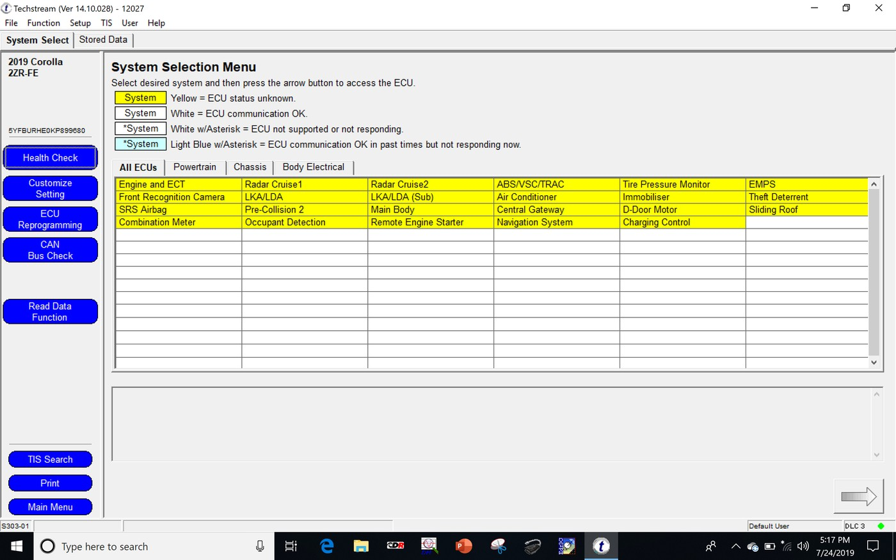
The full menu — yellow means status unknown, white means the ECU answered.
Pinch to zoom.
6Open SRS Airbag → Trouble Codes. Save with the disk icon and capture the current,
pending and history codes. Then Data List — save and capture that too.
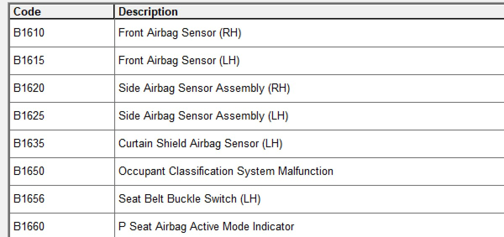
Step 6 — diagnostic codes.
7Back on the System Select tab, click Read Data Function, then choose
PCS FFD Retrieval.
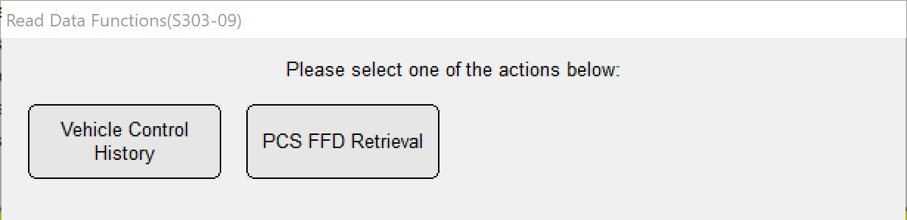
Step 7 — choose PCS FFD Retrieval.
Not the Vehicle Control History button. That path gets VCH only.
PCS FFD Retrieval gets the VCH and the camera images.
8Read the legal notice, tick OK, then Next. Capture the screen.
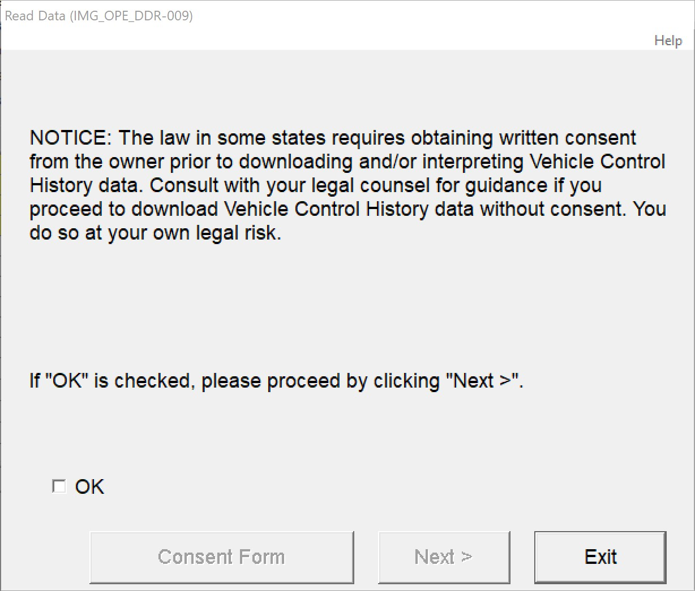
Step 8 — Next stays greyed out until OK is ticked.
9Select Read data, then Next.
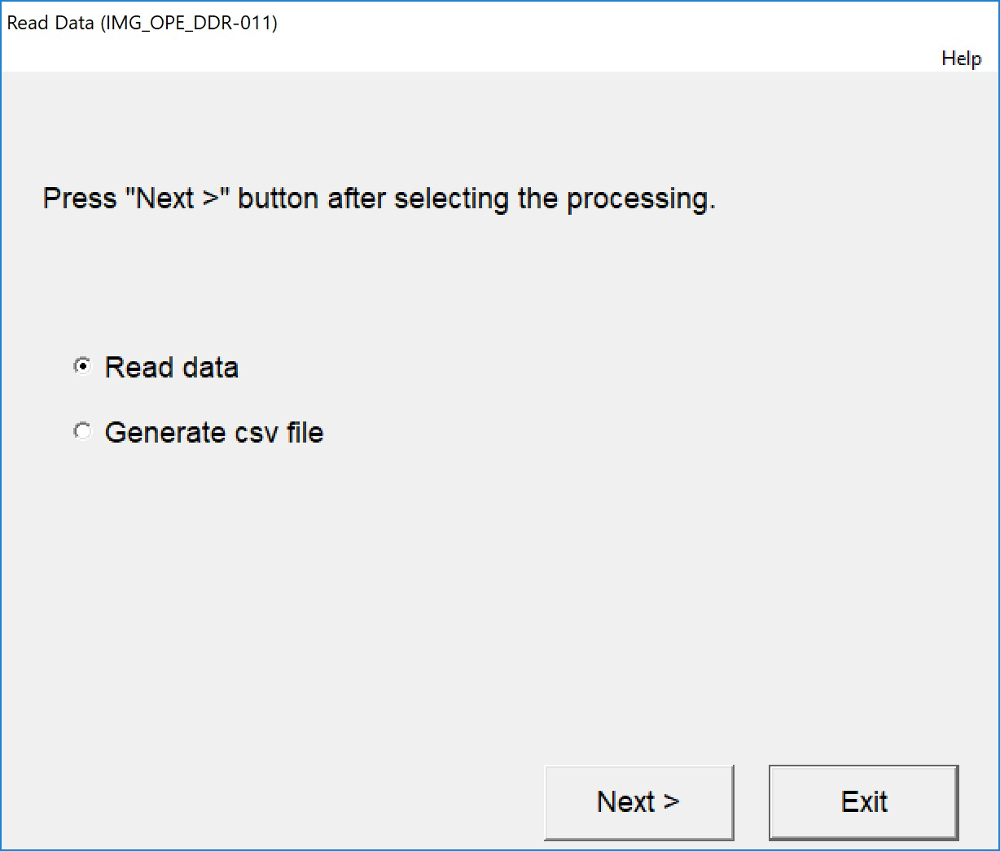
Step 9 — choose Read data.
Not "Generate csv file". It does not retrieve the image data. CSV output
comes later, from the saved file.
10Techstream confirms it will read out Image Data, Operation FFD and Vehicle Control History, and
warns the read may take 1–90 minutes. Confirm your power will last, then Next.
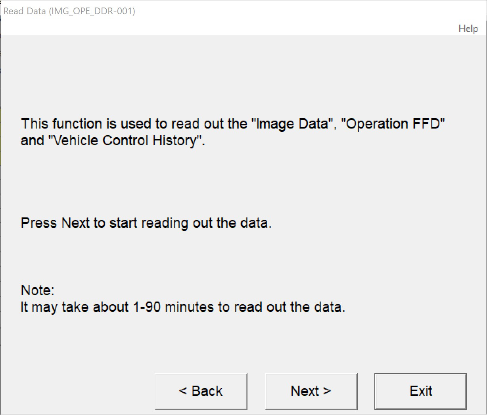
Step 10 — read-out confirmation.
11Select the image data to read and check every box offered — five categories on TSS 2.0,
one on TSS 1.0. Capture the screen, then Next.
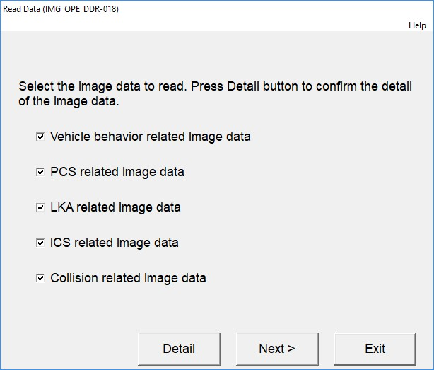
Step 11 — TSS 2.0 selection. TSS 1.0 offers only PCS related Image data.
12Check the estimated read time against your power and available time, then Next to start.
Do not disturb the laptop or the connection while it runs.
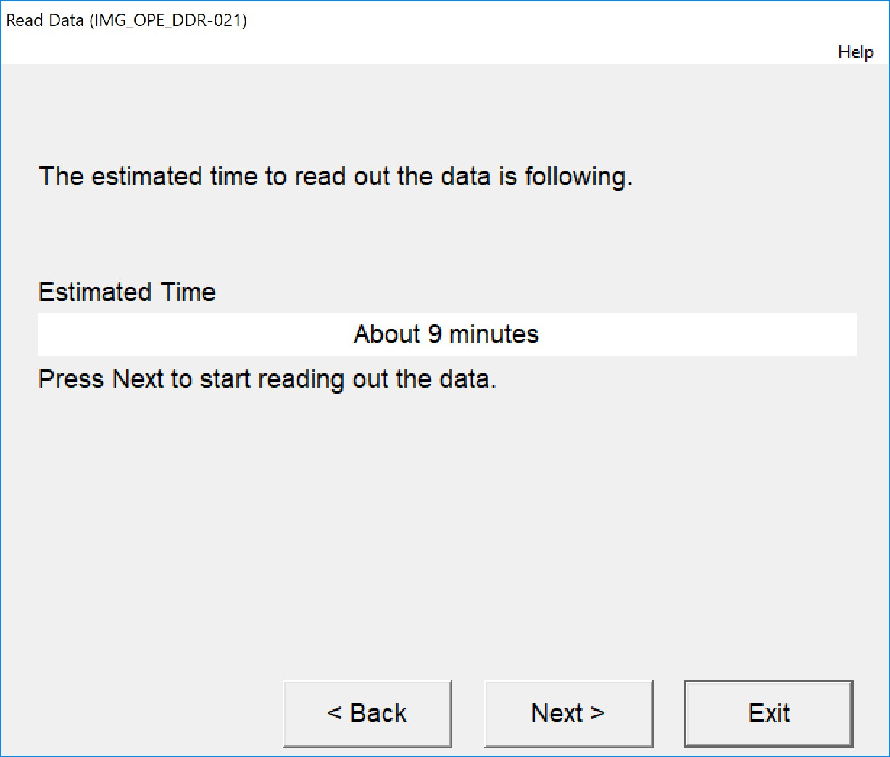
Step 12 — estimated read time.
13Capture the completion screen — the most important capture of the retrieval. It reports
all three data sets and names the file created.
Image data : N/A means no images were stored. That is a finding, not a
failure.
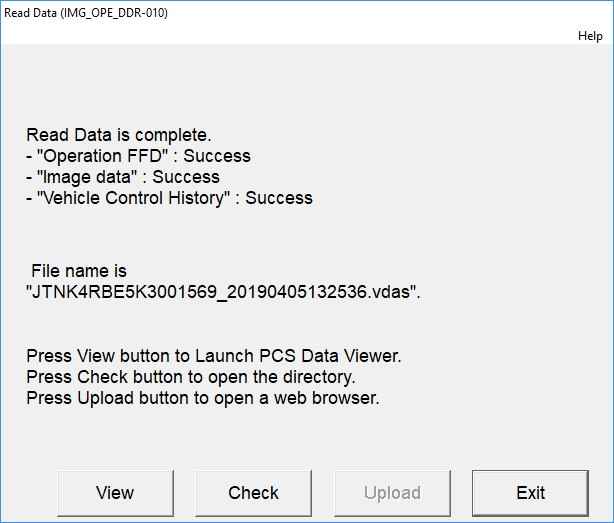
Step 13 — file name is VIN_YYYYMMDDHHMMSS.vdas.
14Click Check. Explorer opens at the save folder — by default
C:\Users\Public\Public Documents\ Techstream\PCSdata\. Confirm the
.vdas file is there and note the path.
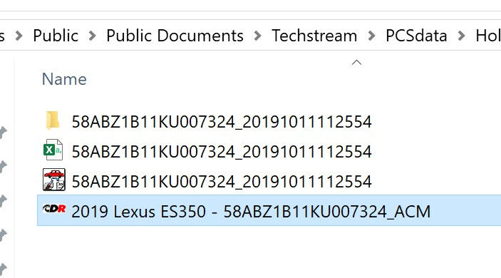
Step 14 — the retrieval file on disk.
15Still on scene, open the Stored Data tab and review the event list — key cycle, elapsed
time, date and time, trigger, odometer, overwrite count. A circle in the Image column marks an
event with camera images. Note the key cycles that matter, then export the list with the disk
icon.
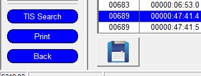
Step 15 — the disk icon, below the list on the left.
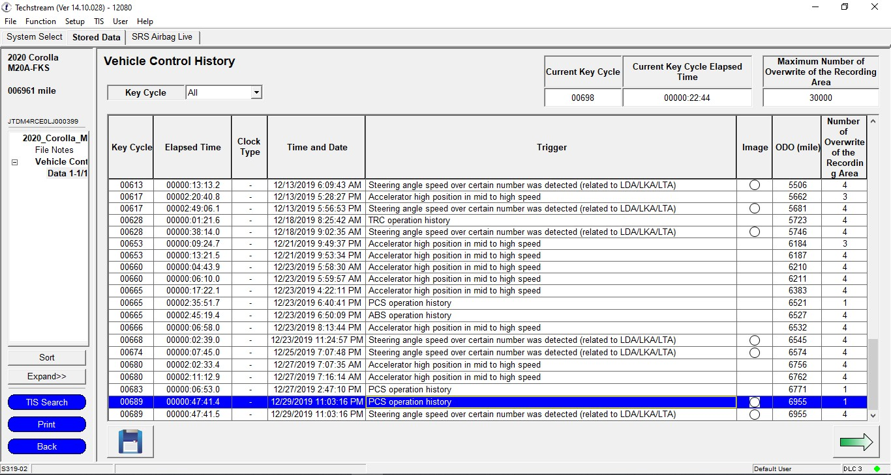
The full event list. Pinch to zoom.
16Open each relevant event to see its parameters and trigger note, and export it with the
disk icon.
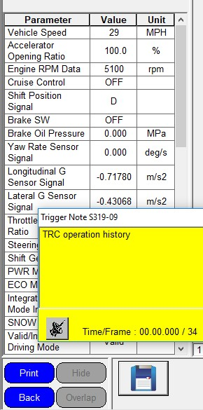
Step 16 — event parameters, trigger note, and the disk icon below.
The Excel export leaves the camera images behind. Images come out only
through the PCS Data Viewer output, done later from the .vdas file — and
only while the subscription is still active.
17Copy the .vdas file and every screen capture to external media.
Open the copy and check its size. Work the checklist, then exit Techstream, disconnect the VIM and
switch the ignition off.
Before you leave
Every item below should be in hand. If one is not applicable, write down why
rather than leaving it blank.
1. Retrieval file VIN_…vdas
Where:C:\Users\Public\Public Documents\Techstream\PCSdata\ How: copy to external media — this is the evidence
2. Read Data complete summary
Where: Read Data (IMG_OPE_DDR-010) How: screen capture — status of all three data sets plus the file name
3. Vehicle Control History event list
Where: Stored Data → Vehicle Control History How: export to Excel (disk icon) + screen capture
4. Individual trigger events, each one relevant
Where: event list → event → disk icon How: export to Excel + screen capture
5. Software version & subscription expiration
Where: main screen at launch · How: screen capture
Next, off the vehicle: load the .vdas file into
PCS Data Viewer and run File → Output PCS Data for the CSV, image and PDF output. Do this
before the TIS subscription expires — once it does, the .vdas file
can no longer be opened. Those steps are in the full Toyota Techstream Imaging Guide.